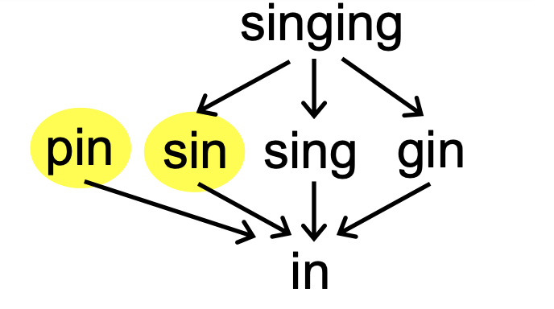
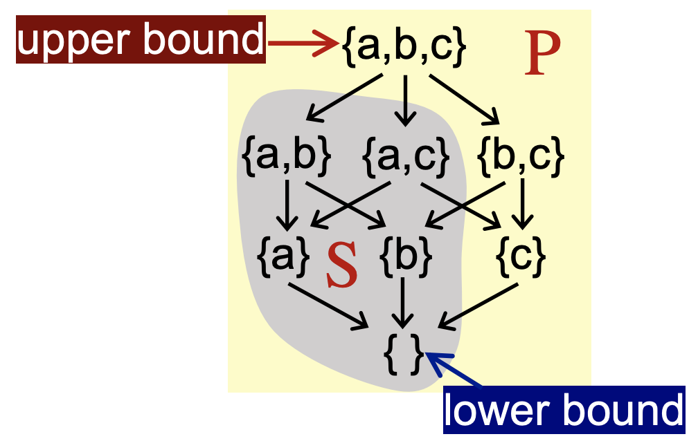
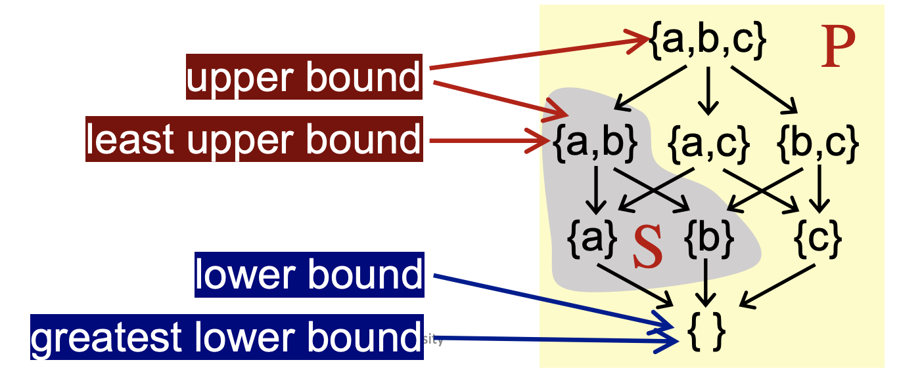
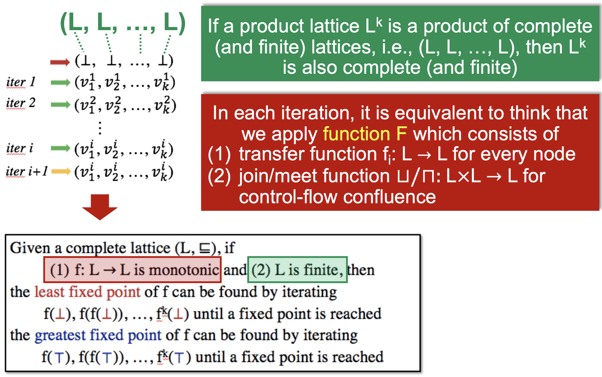
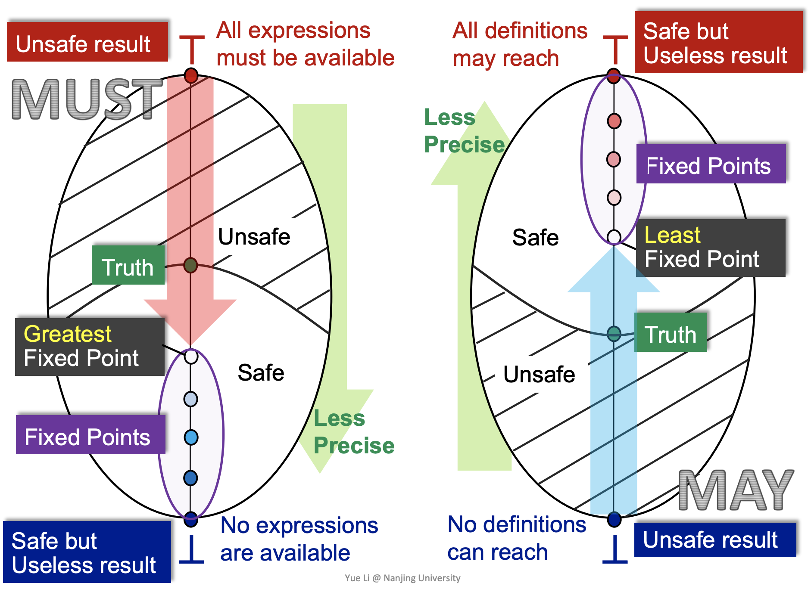
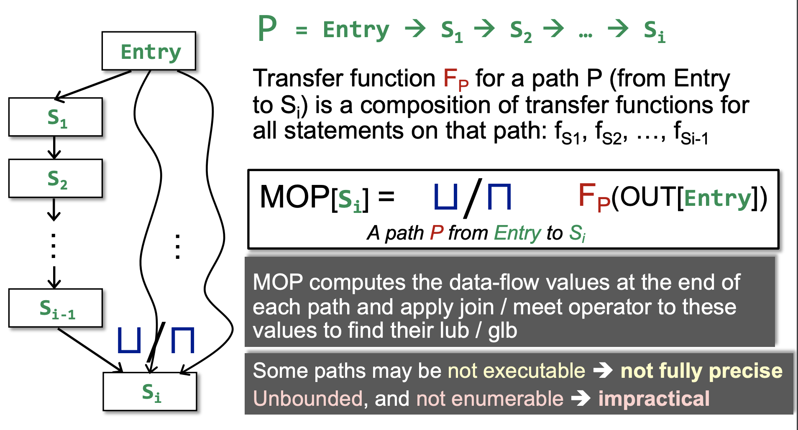
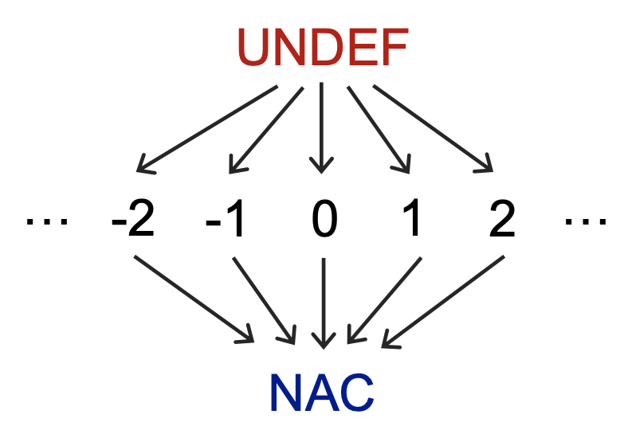
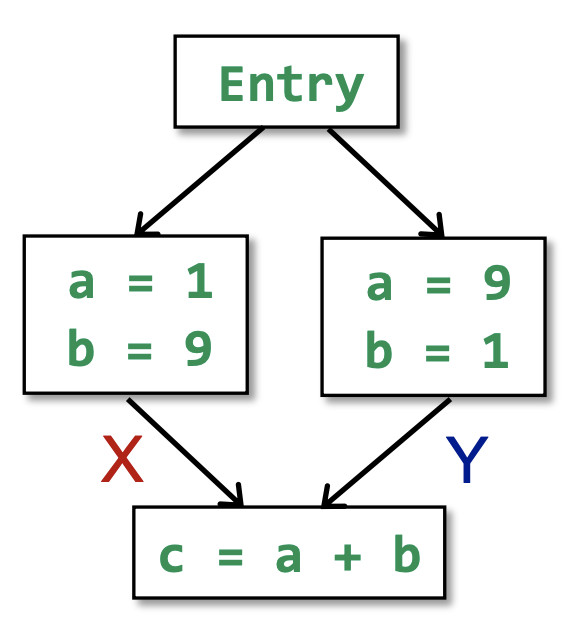
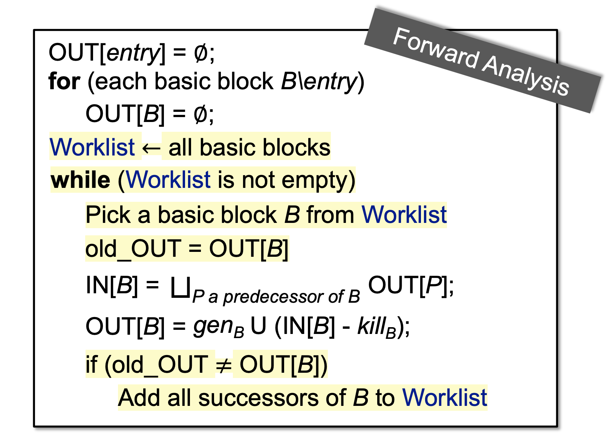

Iterative Algorithm
对于一个含有 k 个节点的 CFG（program），迭代算法会在每次迭代时更新每个节点 n 的 OUT[n]。
假设数据流分析的值域为 V，那么我们可以定义一个 k 元组：
( O U T [ n 1 ] , O U T [ n 2 ] , … , O U T [ n k ] ) ∈ ( V 1 × V 2 × … × V k ) = V k (OUT[{n}_{1}],\, OUT[{n}_{2}],\, \ldots,\, OUT[{n}_{k}])\in({V}_{1}\times{V}_{2}\times\ldots\times{V}_{k})={V}^{k}
( O U T [ n 1 ] , O U T [ n 2 ] , … , O U T [ n k ]) ∈ ( V 1 × V 2 × … × V k ) = V k
每个 k 元组代表每次迭代后的值。
每次迭代通过 transfer functions 和 control-flow handling 来更新 V k {V}^{k} V k F : V k → V k F: {V}^{k}\rightarrow{V}^{k} F : V k → V k
当迭代算法输出的 k 元组和上一次相同时，迭代结束，算法停止；即当 X = F ( X ) X=F(X) X = F ( X )
迭代算法为数据流分析提供一个 solution，此时会有以下几个问题：
算法是否总会到达不动点，或者说是否总有 solution？
只有一个不动点（solution）吗？这个 solution 是最好的（最精确）吗？
什么时候算法会到达不动点？
Partial Order
我们定义偏序集（poset）为一个 ( P , ⊑ ) (P,\, \sqsubseteq) ( P , ⊑ ) ⊑ \sqsubseteq ⊑
（1）∀ x ∈ P , x ⊑ x \forall x\in P,\,x\sqsubseteq x ∀ x ∈ P , x ⊑ x
（2）∀ x , y ∈ P , x ⊑ y ∧ y ⊑ x ⇒ x = y \forall x,\,y\in P,\,x\sqsubseteq y\,\wedge\,y\sqsubseteq x\Rightarrow x=y ∀ x , y ∈ P , x ⊑ y ∧ y ⊑ x ⇒ x = y
（3）∀ x , y , z ∈ P , x ⊑ y ∧ y ⊑ z ⇒ x ⊑ z \forall x,\,y,\,z\in P,\,x\sqsubseteq y\,\wedge\,y\sqsubseteq z\Rightarrow x\sqsubseteq z ∀ x , y , z ∈ P , x ⊑ y ∧ y ⊑ z ⇒ x ⊑ z
偏序（partial）关系不保证集合 P 中的任意两个元素都可以进行比较，全序关系能保证任意两个元素都可以比较。例如下图中的 substring 集合满足偏序关系，但是 pin 和 sin 字符串并不满足子串关系。

Upper and Lower Bounds
给定一个偏序集 ( P , ⊑ ) (P,\, \sqsubseteq) ( P , ⊑ ) S ⊆ P S\subseteq P S ⊆ P
如果 ∃ u ∈ P , ∀ x ∈ S , x ⊑ u \exists u\in P,\,\forall x\in S,\,x\sqsubseteq u ∃ u ∈ P , ∀ x ∈ S , x ⊑ u
如果 ∃ l ∈ P , ∀ x ∈ S , l ⊑ x \exists l\in P,\,\forall x\in S,\,l\sqsubseteq x ∃ l ∈ P , ∀ x ∈ S , l ⊑ x

将偏序集 S 的最小上界（least upper bound, lub or join）记为 ⊔ S \sqcup S ⊔ S ⊔ S ⊑ u \sqcup S \sqsubseteq u ⊔ S ⊑ u
将偏序集 S 的最大下界（greater lower bound, glb or meet）记为 ⊓ S \sqcap S ⊓ S l ⊑ ⊓ S l\sqsubseteq \sqcap S l ⊑ ⊓ S

特别地，如果偏序集 S 只有两个元素 a 和 b（S={a, b}），那么：
最小上界 ⊔ S \sqcup S ⊔ S a ⊔ b a\sqcup b a ⊔ b
最大下界 ⊓ S \sqcap S ⊓ S a ⊓ b a\sqcap b a ⊓ b
一些性质：
不是每个偏序集都有 lub 或者 glb
如果一个偏序集有 lub 或者 glb，那么它一定是唯一的
Lattice, Semilattice, Complete and Product Lattice
Lattice (格)
Given a poset ( P , ⊑ ) (P,\,\sqsubseteq) ( P , ⊑ ) ∀ a , b ∈ P \forall a,\,b\in P ∀ a , b ∈ P a ⊔ b a\sqcup b a ⊔ b a ⊓ b a\sqcap b a ⊓ b ( P , ⊑ ) (P,\,\sqsubseteq) ( P , ⊑ )
如果一个偏序集中的每两个元素都有最小上界和最大下界，那么这个偏序集是一个格。
Semilattice (半格)
Given a poset ( P , ⊑ ) (P,\,\sqsubseteq) ( P , ⊑ ) ∀ a , b ∈ P \forall a,\,b\in P ∀ a , b ∈ P a ⊔ b a\sqcup b a ⊔ b ( P , ⊑ ) (P,\,\sqsubseteq) ( P , ⊑ ) a ⊓ b a\sqcap b a ⊓ b ( P , ⊑ ) (P,\,\sqsubseteq) ( P , ⊑ )
Complete Lattice (全格)
Given a poset ( P , ⊑ ) (P,\,\sqsubseteq) ( P , ⊑ ) ⊔ S \sqcup S ⊔ S ⊓ S \sqcap S ⊓ S ( P , ⊑ ) (P,\,\sqsubseteq) ( P , ⊑ )
如果一个偏序集的所有子集都有最小上界和最大下界，那么这个偏序集是一个全格。
每一个全格 ( P , ⊑ ) (P,\,\sqsubseteq) ( P , ⊑ ) ⊤ = ⊔ P \top =\sqcup P ⊤ = ⊔ P ⊥ = ⊓ P \bot =\sqcap P ⊥ = ⊓ P
如果一个格是有穷的（元素有限的，finite lattice），那么它一定是全格；但 complete lattice 不一定是 finite lattice。
数据流分析更加关注 complete lattice！
Product Lattice (格积)
Given lattices L 1 = ( P 1 , ⊑ 1 ) , L 2 = ( P 2 , ⊑ 2 ) , … , L n = ( P n , ⊑ n ) {L}_{1}=({P}_{1},\,{\sqsubseteq}_{1}),\,{L}_{2}=({P}_{2},\,{\sqsubseteq}_{2}),\,\dots,\,{L}_{n}=({P}_{n},\,{\sqsubseteq}_{n}) L 1 = ( P 1 , ⊑ 1 ) , L 2 = ( P 2 , ⊑ 2 ) , … , L n = ( P n , ⊑ n ) ( P i , ⊑ i ) ({P}_{i},\,{\sqsubseteq}_{i}) ( P i , ⊑ i ) ⊔ i \sqcup_i ⊔ i ⊓ i \sqcap_i ⊓ i product lattice L n = ( P , ⊑ ) L^n=(P, \sqsubseteq) L n = ( P , ⊑ )
P = P 1 × … × P n ( x 1 , … , x n ) ⊑ ( y 1 , … , y n ) ⇔ ( x 1 ⊑ y 1 ) ∧ … ∧ ( x n ⊑ y n ) ( x 1 , … , x n ) ⊔ ( y 1 , … , y n ) = ( x 1 ⊔ 1 y 1 , … , x n ⊔ n y n ) ( x 1 , … , x n ) ⊓ ( y 1 , … , y n ) = ( x 1 ⊓ 1 y 1 , … , x n ⊓ n y n ) \begin{aligned}
&P=P_1\times\ldots\times P_n
\\
&(x_1,\,\ldots,\,x_n)\sqsubseteq(y_1,\,\ldots,\,y_n)\Leftrightarrow(x_1\sqsubseteq y_1)\wedge\ldots\wedge(x_n\sqsubseteq y_n)
\\
&(x_1,\,\ldots,\,x_n)\sqcup(y_1,\,\ldots,\,y_n)=(x_1\sqcup_1 y_1,\,\ldots,\,x_n\sqcup_n y_n)
\\
&(x_1,\,\ldots,\,x_n)\sqcap(y_1,\,\ldots,\,y_n)=(x_1\sqcap_1 y_1,\,\ldots,\,x_n\sqcap_n y_n)
\end{aligned}
P = P 1 × … × P n ( x 1 , … , x n ) ⊑ ( y 1 , … , y n ) ⇔ ( x 1 ⊑ y 1 ) ∧ … ∧ ( x n ⊑ y n ) ( x 1 , … , x n ) ⊔ ( y 1 , … , y n ) = ( x 1 ⊔ 1 y 1 , … , x n ⊔ n y n ) ( x 1 , … , x n ) ⊓ ( y 1 , … , y n ) = ( x 1 ⊓ 1 y 1 , … , x n ⊓ n y n )
Data Flow Analysis Framework via Lattice
一个数据流分析框架 (D, L, F) 由以下元素组成：
D: a direction of data flow，forward or backward
L: a lattice including domain of the values V and a meet ⊓ \sqcap ⊓ s q c u p sqcup s q c u p
F: a family of transfer functions from V to V
数据流分析可以视为在 lattice 的值上迭代地应用 转换函数和 meet/join 操作符。
Monotonicity and Fixed Point Theorem
Monotonicity (单调性)
A function f : L → L f:\,L\to L f : L → L ∀ x , y ∈ L , x ⊑ y ⇒ f ( x ) ⊑ f ( y ) \forall x,\,y\in L,\,x\sqsubseteq y \Rightarrow f(x)\sqsubseteq f(y) ∀ x , y ∈ L , x ⊑ y ⇒ f ( x ) ⊑ f ( y )
Fixed Point Theorem (不动点定理)
Given a complete lattice ( L , ⊑ ) (L,\,\sqsubseteq) ( L , ⊑ ) f : L → L f:\,L\to L f : L → L least fixed point of f can be found by iteratingf ( ⊥ ) , f ( f ( ⊥ ) ) , f k ( ⊥ ) f(\bot),\,f(f(\bot)),\,f^k(\bot) f ( ⊥ ) , f ( f ( ⊥ )) , f k ( ⊥ ) greatest fixed point of f can be found by iteratingf ( ⊤ ) , f ( f ( ⊤ ) ) , f k ( ⊤ ) f(\top),\,f(f(\top)),\,f^k(\top) f ( ⊤ ) , f ( f ( ⊤ )) , f k ( ⊤ )
证明略
Relate Iterative Algorithm to Fixed Point Theorem

证明 function F is monotonic 省略
什么时候迭代算法到达不动点？
The height of a lattice h h h
lattice 的高度定义为从 Top 到 Bottom 的最长路径的长度，假设 lattice 的高度为h，CFG 的节点数为 k，假设每次迭代只能让一个节点在 lattice 增长一个高度，那么最坏情况下迭代次数为 i = h ∗ k i=h*k i = h ∗ k
May/Must Analysis, A Lattice View

MOP and Distributivity
Meet-Over-All-Paths Solution (MOP)

之前的数据流分析算法（Iterative Algorithm）是流敏感的，而 MOP 是路径敏感的。
Ours (Iterative Algorithm) vs. MOP I N [ S 4 ] = O U T [ S 3 ] = f S 3 ( I N [ S 3 ] ) = f S 3 ( O U T [ S 1 ] ⊔ O U T [ S 2 ] ) = f S 3 ( f S 1 ( I N [ S 1 ] ) ⊔ f S 2 ( I N [ S 2 ] ) ) = f S 3 ( f S 1 ( O U T [ E n t r y ] ) ⊔ f S 2 ( O U T [ E n t r y ] ) ) M O P [ S 4 ] = f S 3 ( f S 1 ( O U T [ E n t r y ] ) ) ⊔ f S 3 ( f S 2 ( O U T [ E n t r y ] ) ) ⇒ O u r s = F ( x ⊔ y ) M O P = F ( x ) ⊔ F ( y ) \begin{aligned}
\begin{aligned}
\textcolor{blue}{IN[S_4]}&=OUT[S_3] \\
&=f_{S_3}(IN[S_3]) \\
&=f_{S_3}(OUT[S_1]\,\sqcup\,OUT[S_2]) \\
&=f_{S_3}(f_{S_1}(IN[S_1])\,\sqcup\,f_{S_2}(IN[S_2])) \\
&=f_{S_3}(f_{S_1}(OUT[Entry])\,\sqcup\,f_{S_2}(OUT[Entry]))
\\
\textcolor{red}{MOP[S_4]}&=f_{S_3}(f_{S_1}(OUT[Entry]))\,\sqcup\,f_{S_3}(f_{S_2}(OUT[Entry])) \\
\end{aligned}
\qquad \Rightarrow \qquad
\begin{aligned}
\textcolor{blue}{Ours}&=F(x\sqcup y) \\
\textcolor{red}{MOP}&=F(x)\sqcup F(y) \\
\end{aligned}
\end{aligned}
I N [ S 4 ] MOP [ S 4 ] = O U T [ S 3 ] = f S 3 ( I N [ S 3 ]) = f S 3 ( O U T [ S 1 ] ⊔ O U T [ S 2 ]) = f S 3 ( f S 1 ( I N [ S 1 ]) ⊔ f S 2 ( I N [ S 2 ])) = f S 3 ( f S 1 ( O U T [ E n t ry ]) ⊔ f S 2 ( O U T [ E n t ry ])) = f S 3 ( f S 1 ( O U T [ E n t ry ])) ⊔ f S 3 ( f S 2 ( O U T [ E n t ry ])) ⇒ O u rs MOP = F ( x ⊔ y ) = F ( x ) ⊔ F ( y )
根据最小上界 s q c u p sqcup s q c u p x ⊑ x ⊔ y x\sqsubseteq x\sqcup y x ⊑ x ⊔ y y ⊑ x ⊔ y y\sqsubseteq x\sqcup y y ⊑ x ⊔ y
因为转换函数 F 是单调的，我们有 F ( x ) ⊑ F ( x ⊔ y ) F(x)\sqsubseteq F(x\sqcup y) F ( x ) ⊑ F ( x ⊔ y ) F ( y ) ⊑ F ( x ⊔ y ) F(y)\sqsubseteq F(x\sqcup y) F ( y ) ⊑ F ( x ⊔ y )
这意味着 F ( x ⊔ y ) F(x\sqcup y) F ( x ⊔ y ) F ( x ) F(x) F ( x ) F ( y ) F(y) F ( y )
因为 F ( x ) ⊔ F ( y ) F(x)\sqcup F(y) F ( x ) ⊔ F ( y ) F ( x ) F(x) F ( x ) F ( y ) F(y) F ( y ) F ( x ) ⊔ F ( y ) ⊑ F ( x ⊔ y ) F(x)\sqcup F(y)\sqsubseteq F(x\sqcup y) F ( x ) ⊔ F ( y ) ⊑ F ( x ⊔ y )
因此 M O P ⊑ O u r s \textcolor{red}{MOP}\sqsubseteq \textcolor{blue}{Ours} MOP ⊑ O u rs
但是，当 F 是 distributive （F 满足分配率）时，F ( x ⊔ y ) = F ( x ) ⊔ F ( y ) F(x\sqcup y)=F(x)\sqcup F(y) F ( x ⊔ y ) = F ( x ) ⊔ F ( y ) M O P = O u r s \textcolor{red}{MOP}=\textcolor{blue}{Ours} MOP = O u rs
BitVector 或 Gen/Kill (set union/intersection for join/meet) 问题都是满足分配率的。
Constant Propagation
Given a variable x at program point p, determine whether x is guaranteed to hold a constant value at p.
对于在程序点 p 的一个变量 x，判断 x 的值在 p 点是否为一个常量（恒定值）。
CFG 中每个节点的 OUT 包含一个 (x, v) 集合，x 是变量，v 是变量 x 在该点的值。
上文中提到的数据流分析框架 (D, L, F)：
Direaction
显然对于常量传播分析（Constant Propagation Analysis），data flow 是 forward 。
Lattice
Domian of the values V

常量传播分析是一种 must analysis，其最小上界为 undefined，因为在程序开始之前我们并不知道每个程序点上变量的具体值，因此视为未定义的；最大下界是 NAC（Not A Constant），而中间就是各种常量。
Meet Operator ⊓ \sqcap ⊓
N A C ⊓ v = N A C U N D E F ⊓ v = v c ⊓ v = ? c ⊓ c = c c 1 ⊓ c 2 = N A C \begin{align}
&\mathrm{NAC}\sqcap v=\mathrm{NAC} \\
&\mathrm{UNDEF}\sqcap v=v \\
&c\sqcap v =\,? \\
&c\sqcap c=c \\
&c_1\sqcap c_2=\mathrm{NAC} \\
\end{align}
NAC ⊓ v = NAC UNDEF ⊓ v = v c ⊓ v = ? c ⊓ c = c c 1 ⊓ c 2 = NAC
公式(2) 表示常量传播分析通常不关注未初始化的变量（Uninitialized variables），即允许漏报。
在每个程序汇聚点（path confluence, PC），我们需要对所有进入的数据流值使用 meet 操作。
Transfer Functions
Given a statement s : x = … s: x = \ldots s : x = …
F : O U T [ s ] = g e n ∪ ( I N [ s ] − { ( x , _ ) } ) F:\,OUT[s]=gen\cup (IN[s]-\{(x,\,\_)\})
F : O U T [ s ] = g e n ∪ ( I N [ s ] − {( x , _ )})
(We use val(x) to denote the lattice value that variable x holds)
s : x = c ; // c is a constant g e n = { ( x , c ) } s : x = y ; g e n = { ( x , v a l ( y ) ) } s : x = y o p z ; g e n = { ( x , f ( y , z ) ) } f ( y , z ) = { v a l ( y ) o p v a l ( z ) // if v a l ( y ) and v a l ( z ) are constants N A C // if v a l ( y ) or v a l ( z ) is NAC U N D E F // otherewize \begin{array}{l}
s: x = c;\,\text{\color{green}{// c is a constant}} &gen=\{(x,\,c)\} \\
s: x = y; &gen=\{(x,\,val(y))\} \\
s: x = y\;op\;z; &gen=\{(x,\,f(y,\,z))\} \\
\\
f(y,z)=\begin{cases}
val(y)\;op\;val(z) &\text{\color{green}{// if $val(y)$ and $val(z)$ are constants}} \\
\mathrm{NAC} &\text{\color{green}{// if $val(y)$ or $val(z)$ is NAC}} \\
\mathrm{UNDEF} &\text{\color{green}{// otherewize}}
\end{cases}
\end{array}
s : x = c ; // c is a constant s : x = y ; s : x = y o p z ; f ( y , z ) = ⎩ ⎨ ⎧ v a l ( y ) o p v a l ( z ) NAC UNDEF // if v a l ( y ) and v a l ( z ) are constants // if v a l ( y ) or v a l ( z ) is NAC // otherewize g e n = {( x , c )} g e n = {( x , v a l ( y ))} g e n = {( x , f ( y , z ))}
(if s is not an assignment statement, F is the identity function)
常量传播分析是不可分配的（Nondistributivity）

F ( X ⊓ Y ) = { ( a , N A C ) , ( b , N A C ) , ( c , N A C ) } F ( X ) ⊓ F ( Y ) = { ( a , N A C ) , ( b , N A C ) , ( c , 10 ) } F ( X ⊓ Y ) ≠ F ( X ) ⊓ F ( Y ) F ( X ⊓ Y ) ⊑ F ( X ) ⊓ F ( Y ) F(X\sqcap Y)=\{(a,\mathrm{NAC}),\,(b,\mathrm{NAC}),\,(c,\mathrm{NAC})\} \\
F(X)\sqcap F(Y)=\{(a,\mathrm{NAC}),\,(b,\mathrm{NAC}),\,(c,10)\} \\
F(X\sqcap Y)\neq F(X)\sqcap F(Y) \\
F(X\sqcap Y)\sqsubseteq F(X)\sqcap F(Y)
F ( X ⊓ Y ) = {( a , NAC ) , ( b , NAC ) , ( c , NAC )} F ( X ) ⊓ F ( Y ) = {( a , NAC ) , ( b , NAC ) , ( c , 10 )} F ( X ⊓ Y ) = F ( X ) ⊓ F ( Y ) F ( X ⊓ Y ) ⊑ F ( X ) ⊓ F ( Y )
常量传播分析具有单调性。
Worklist Algorithm
Worklist Algorithm 是 Iterative Algorithm 的优化，Iterative Algorithm 存在冗余计算，Worklist Algorithm 只计算变化的 node。
